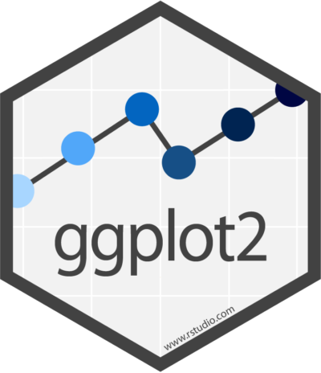
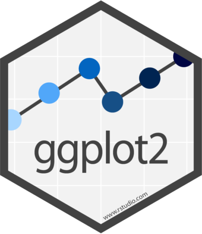

Núcleo de Métodos Quantitativos (QUANT) - FNDE
Proposta inicial de estruturação
Allan Quadros
O FNDE ($)
O FNDE

Como o FNDE manipula e utiliza esse grande volume de dados para gerar informação?


(Maus) Exemplos
(Maus) Exemplos


Resumo do Problema
- imensa quantidade de dados
- dados extremamente sensíveis (financeiros, estratégicos)
análise de dados pouco profissional
- projeções equivocadas
- indicadores inócuos/imprecisos
- controles falhos
- retrabalho
- desperdício de tempo
- desperdício de
$$$
O Núcleo ...
Missão do Núcleo
Qual seria então o papel do Núcleo?
Tratar problemascuja origem ou solução estão nos dados utilizados pela autarquia eproduzir conhecimentoa partir destes dados de modo a contribuir para a melhora da gestão da educação brasileira.
Localização

Atuação do Núcleo
- indicadores

- estruturação/organização/governança de dados
- modelagem estatística/matemática
- capacitação
- coordenação de parcerias técnicas
- otimização de rotinas e prototipação de soluções
Funcionamento
- análise contínua de dados dos programas e formulação de indicadores
- sistema de concorrência de demandas \(\Rightarrow\) projetos estratégicos
- presidência
- diretorias/prospecção do Núcleo junto as áreas
Funcionamento
Capacitação
- rodadas de capacitação com as diretorias
- intro à análise de dados
- R & Python
- Estatística Básica
Como o Núcleo pode ajudar?

ideia:utilizar um modelo de regressão logística
Como o Núcleo pode ajudar?
Como o Núcleo pode ajudar?

## [1] "accuracy: 0.66"
## [1] "sensitivity: 0.73"
## [1] "specificity: 0.57"
Algumas iniciativas isoladas
- Malha-Fina FNDE
- FisFa - Fiscaliza Fatura FIES
- Conferência da carteira de títulos do FIES
- Projeções financeiras de arrecadação
- App para controle orçamentário de emendas parlamentares na DIFIN
- Robô para raspagem do Diário Oficial da União
- Capacitação de servidores em Análise de Dados em R (2 módulos)
- Outras ...
FisFa - Fiscaliza Fatura FIES
Cooperação Técnica & Parcerias


Outras atividades
- Abrir os dados do FNDE para a comunidade acadêmica
- Receber estudantes de pós-graduação e graduação
- criar um prêmio para trabalhos de conclusão de curso/dissertações/teses voltados para a análise de dados do FNDE
- no caso de pós-graduação, agraciar o vencedor com uma vaga de consultoria para tocar o projeto
- oferecer bolsas de estudos estudantes com projetos promissores de pós-graduação
- oferecer vagas de estágio para estudantes com projetos de conclusão de curso promissores
Passos importantes para a estruturação do Núcleo
Estruturação como unidade física- Portaria instituindo o Núcleo vinculado à AGEST, compondo a estrutura do Gabinete da presidência
- formar inicialmente um Grupo de Trabalho (GT)
- servidores, consultores e terceirizados de preferência já com formação em área afim
- servidores e colaboradores full time
- alguns servidores com conhecimento especializado, mas que ocupam outros cargos, podem contribuir eventualmente
- iniciar imediatamente revisão do regimento interno para contemplar a estrutura do Núcleo no organograma do FNDE
Obrigado!!
Feito no
 com
com
 ,
,
 e
 !!
e
 !!
Códigos e apresentação disponíveis no em:
em: